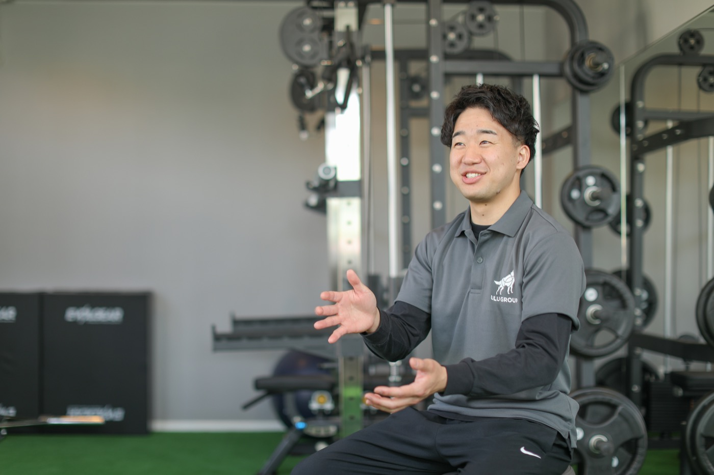

歩く、出かける。
長く歩くことや、階段の上り下りをもっと楽しみたい。
姫路の機能改善パーソナルトレーニング
歩く、出かける、趣味に夢中になる。
そんな毎日を、自分らしく続けるために。
今の身体の動きを確かめ、一人ひとりに合ったトレーニングをご提案します。
初回 4,980円（税込）
60〜90分程度・カウンセリング込み

旅行を楽しむ。趣味に出かける。
家族と、思いきり遊ぶ。
年齢や運動経験に関係なく、これからも自分らしく動ける身体を目指して。ULUは、あなたの毎日に必要な動きから身体づくりを考えます。
長く歩くことや、階段の上り下りをもっと楽しみたい。
立つ、かがむ、物を持つ。普段の動きに自信を持ちたい。
旅行やゴルフ、子どもとの時間を、これからも楽しみたい。
本格的なスポーツをしていなくても大丈夫。運動に慣れていない方も、一緒に始められます。
筋力だけでなく、姿勢や関節の動き、全身のつながりにも目を向けます。今の身体と、これからしたいことに合わせて、無理のない一歩を組み立てます。
お困りのことや目標を伺い、姿勢や身体の動きを確認します。
身体の状態や体力に合わせて、支える・動かす力を育てます。
仕事や家事、趣味など、あなたが大切にしたい場面を見据えて進めます。

ULUは、整体とパーソナルトレーニングを行う施設です。柔道整復師の院長が、身体の状態と目標に合わせ、整体と運動をつなげてご提案します。
代表・柔道整復師 日下部 宣宇
初回 4,980円（税込）・60〜90分程度
ご希望の日時をお選びください。ご不明なことはLINEでもご相談いただけます。
今気になることや、これからやりたいことを伺います。
姿勢や動きを確認し、身体に合わせて取り組みます。
目標や生活に合わせた進め方を一緒に考えます。
兵庫県姫路市田寺東2丁目43-27
月〜土 9:00〜21:00 ／ 日曜・祝日休み
完全予約制・駐車場あり

はい。運動経験や体力、身体の状態に合わせた内容をご提案します。
状態を伺い、整体や運動についてご相談いただけます。強い痛みやしびれ、発熱などがある場合は、先に医療機関へご相談ください。
動きやすい服装をご持参ください。
あなたの「こうなりたい」から、
一緒に始めましょう。
初回 4,980円（税込）
初回予約はこちら ↗